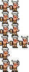

era3-barbarian: old and new
game scale: one sheet pixel at the rig's 3.2x on the 800 x 600 page (what stands behind the paddle)
OLD (pixellab, on screen today)
NEW (tools/spritegen.mjs)
4x
OLD
NEW
era3-barbarian: era 3 (Sega Genesis), 60 x 150 sheet, 12 frames of 20 x 25
old: faults 1 colours 46 frames 12 (11 unique) 46 colours used; one Sega Genesis sprite palette holds 15
new: faults 0 colours 14 frames 12 (9 unique) opaque/frame 311 outline 35.4% detail 10.2%
prompt: The Genesis left player: a Golden Axe barbarian facing right, horned steel helmet, red beard, bare chest, fur loincloth, fur-cuffed boots, round wooden shield on the back arm, the front fist on the frame's right edge where the paddle is held. One character in every frame: same helmet, same shield, same costume.
one sheet took 3.7 minutes of drawing (a Claude run authoring the grid); the tool builds it in 17 ms